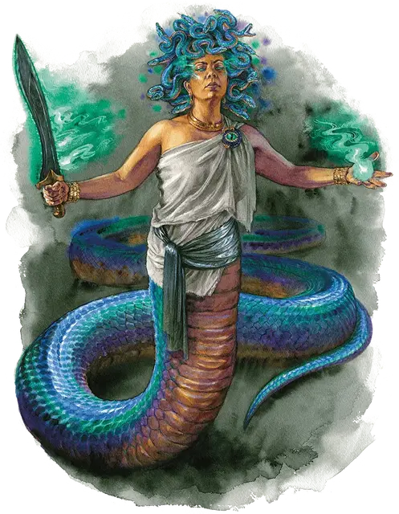

Медуза иерофант
Hierophant Medusa
Большой Монстр, любое мировоззрение

Класс Доспеха 17 (природный доспех)
Хиты 237 (25к10 + 100)
Скорость 40 футов, плавая 40 футов, лазая 40 футов
| мод | спас | ||
|---|---|---|---|
| СИЛ | 22 | +6 | +6 |
| ЛОВ | 20 | +5 | +5 |
| ТЕЛ | 18 | +4 | +10 |
| мод | спас | ||
|---|---|---|---|
| ИНТ | 15 | +2 | +2 |
| МДР | 23 | +6 | +12 |
| ХАР | 22 | +6 | +6 |
Навыки Восприятие +12, Проницательность +12, Религия +8, Скрытность +11, Убеждение +12
Иммунитет к урону яд
Иммунитет к состояниям испуг, окаменение, отравление, очарование
Языки Общий плюс любые три языка (рекомендуются Бездны, Небесный, Друидический или Инфернальный)
Опасность 17 (18000 опыта)
Бонус мастерства +6
Особенности
Легендарное сопротивление (3/день). Если медуза проваливает спасбросок, он может вместо этого сделать спасбросок успешным.
Зов верности (1/день). Медуза может наложить заклинание воскрешение [resurrection], без использования материальных компонентов и используя Мудрости в качестве базовой характеристики.
Действия
Мультиатака. Медуза совершает одну атаку Сжиманием, одну атаку Завершающим клинком и одну атаку Змеиными волосами. Альтернативно она может совершить две атаки Разъярённым ударом.
Сжимание. . Рукопашная атака оружием: +12 к попаданию, досягаемость 10 футов, одно существо. Попадание: 16 (3к6 +6) дробящего урона, и если целью является существо Среднего размера или меньше, она становится схвачена (Сл высвобождения 20). Пока этот захват не окончится, цель так же опутана. И медуза не может удерживать другую цель.
Завершающий клинок. . Рукопашная атака оружием: +12 к попаданию, досягаемость 5 футов, одна цель. Попадание: 13 (2к6 + 6) рубящего урона плюс 21 (6к6) урона силовым полем. Если у цели атаки как минимум одна голова, и медуза выбрасывает "20" при броске атаки, то цель обезглавливается и умирает, если она проваливает спасбросок Телосложения Сл 20 и не может жить без головы. Цель невосприимчива к этому эффекту, если она не получила урона от атаки, обладает легендарными действиями, или имеет размер Огромный или больше. Кроме того, цель получает дополнительно 28 (8к6) урона силовым полем.
Змеиные волосы. . Рукопашная атака оружием: +12 к попаданию, досягаемость 5 футов, одно существо. Попадание: 11 (1к10 + 6) колющего урона плюс 5 (1к10) урона ядом.
Разъярённый удар. . Дальнобойная атака заклинанием +12 к попаданию, дистанция 120 футов, одно существо. Попадание: 22 (3к10 + 6) урона излучением и цель становится ослеплённой до конца её следующего хода.
Использование заклинаний. Медуза накладывает одно из следующих заклинаний, не нуждаясь в материальных компонентах, используя Мудрость в качестве базовой характеристики (Сл спасброска заклинания 20):
• Неограниченно: свет [light], уход за умирающим [spare the dying], чудотворство [thaumaturgy]
• 2/день: множественное лечение ран [mass cure wounds] (вариант 8-го уровня)
• 1/день каждое: стена клинков [blade barrier], предсказание [divination], высшее восстановление [greater restoration]
Бонусные действия
Окаменяющий взгляд (перезарядка 4-6). Медуза выпускает окаменевающую магию из своих глаз в виде 30-футового конуса. Каждое существо в этой области должно совершить спасбросок Телосложения Сл 18, если только существо не ослеплённое. Если спасбросок провален на 5 или больше единиц, существо мгновенно становится окаменевшим. В противном случае провалившее спасбросок существо получает 10 (3к6) урона силовым полем и начинает превращаться в камень, становясь опутанным. Опутанное существо должно повторить спасбросок в конце своего следующего хода, становясь окаменевшим при провале или оканчивая эффект при успехе. Окаменение длится до тех пор, пока не будет использовано заклинание высшее восстановление [greater restoration] или подобная магия.
Существо может использовать свою реакцию, если она доступна, чтобы закрыть глаза, для избегания спасброска. Если существо делает это, оно становится ослеплённой до конца своего следующего хода.
Легендарные действия
Медуза может совершить 3 легендарных действия на выбор из перечисленных ниже вариантов. Лишь одно легендарное действие может быть совершено за один раз, и только в конце хода другого существа. Медуза восстанавливает истраченные действия в начале своего хода.
Перемещение. Медуза перемещается на свою скорость, не провоцируя атак.
Разъярённый взрыв (стоит 2 действия). Медуза совершает один Разъярённый удар.
Завершающий разрез (стоит 3 действия). Медуза с преимуществом совершает атаку Завершающим клинком.
Логово
Логово медузы часто украшено окаменевшими телами существ, поднявшими оружие против медузы или её последователей. Логово, как правило, является богатым хранилищем знаний, причем знания как мирские, так и тайные наполняют книги, свитки, таблички или более странные архивы — такие как магические кристаллы, хранящие запечатленные воспоминания или голоса давно умерших. Вы можете использовать описания этого логова и действия логова, для любой медузы, включая медузу-иерофанта или медузу [medusa] из "Бестиария".
Действия логова
При значении инициативы «20» (проигрыш при ничье), медуза может совершить действие в логове, чтобы создать один из следующих эффектов; он не может использовать один и тот же эффект два раунда подряд:
Волна окаменения. До трех существ, которых медуза может видеть в логове, частично обращаются в камень. Каждая цель должна совершить спасбросок Телосложения Сл 15. При провале скорость цели снижается до 0 и никак не может быть увеличена. При успехе её скорость уменьшается вдвое. Скорость цели возвращается к норме при значении инициативы "20" в следующем раунде.
Непредвиденный камень. Медуза создает каменную стену на твердой поверхности, которую она может видеть внутри логова. Стена может быть до 60 футов в длину, 20 футов в высоту и 1 фут в толщину. Каждая 5-футовая секция стены имеет КД 17; 30 хитов; уязвимость к урону звуком и иммунитет к урону ядом, психической энергией и рубящему урону. Существо, находящееся в пространстве стены, когда стена появляется, выталкивается в ближайшее незанятое пространство с одной стороны стены и должно совершить спасбросок Ловкости Сл 15. При провале медуза выбирает сторону. При успехе существо выбирает сторону. Стена исчезает, когда медуза снова использует это действие логова или когда медуза умирает.
Колышущаяся поверхность. Твердые поверхности внутри логова начинают извиваться подобно змеиным кольцам. До трёх существ, которых медуза может видеть в логове, могут переместиться на расстояние до 30 футов по твердым поверхностям, не провоцируя атак. Если существо движется по поверхности, такой как потолок, без возможности удержаться на ней (например, не за что ухватиться рукой), оно падает в конце этого движения.
Местные эффекты
Область, в которой находится логово медузы, изменяется из за присутствия медузы, создавая один или несколько из следующих эффектов:
• Лики в камне. Камень в пределах 3 миль от логова приобретает едва уловимые формы, напоминающие людей, животных и других существ, если смотреть на него краем глаза или при тусклом освещении или тумане.
• Собранные знания. Будучи в логове, существа с преимуществом совершают проверки характеристик, позволяющие обнаружить или вспомнить информацию, относящуюся к божественному предназначению медузы.
Если медуза умирает, эти эффекты исчезают в течение 1к10 дней.
Описание
Иногда глубоко набожные люди, обычно гуманоиды или медузы, посвящают себя какому-либо делу и с помощью божества или магии превращаются в медуз-иерофантов - существ с мощными змеиными хвостами вместо нижней части тела, змеями вместо волос и окаменевающим взглядом. Первая медуза иерофант была преобразована силой карты Эвриала, когда этот человек был вдохновлен историей Эвриалы и ее непоколебимой убежденностью.
Эти медузы - наделенные божественной силой чемпионы, черпающие свою силу из космической истины, воли божества или первобытных сил природы. Они собирают и вдохновляют последователей, защищая свой народ и направляя его к исполнению божественного предназначения медузы. Таблица Божественного предназначения предлагает рекомендации по их мотивации. Совершите бросок по таблице или используйте её в качестве вдохновения для создания своего собственного предназначения.
Божественное предназначение
| к6 | Предназначение |
| 1 | Охранять святилище, в котором хранятся останки святых, до тех пор, пока они не будут возвращены к жизни, чтобы противостоять врагу, искажающему мир. |
| 2 | Собрать потерянные осколки окаменевшего тела мертвого бога и воссоединить их на алтаре в логове медузы. |
| 3 | Поддерживай планарный перекрёсток, из которого вытекает великая сила, одновременно ограничивая воздействие этой силы по мере того, как она наполняет мир. |
| 4 | Найди новое поколение чемпионов и обучи их сражаться на войне. |
| 5 | Ухаживай за священным маяком, питаемым Внешними Планами, рассылая искры этого маяка во все уголки мира, чтобы поддерживать божественную завесу. |
| 6 | Следит за входом в гробницу дремлющего титана в поисках любых признаков того, что титан может пробудиться, и давай отпор силам, что стремятся сломать печать гробницы. |